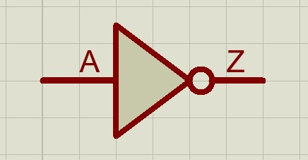
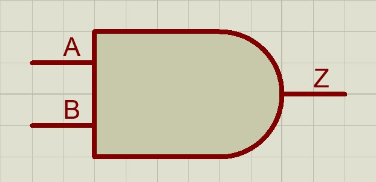
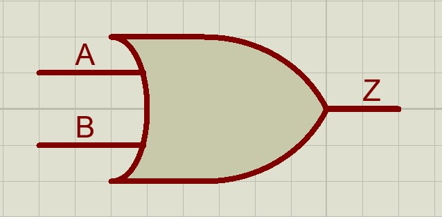
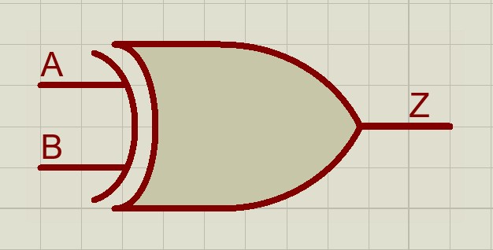
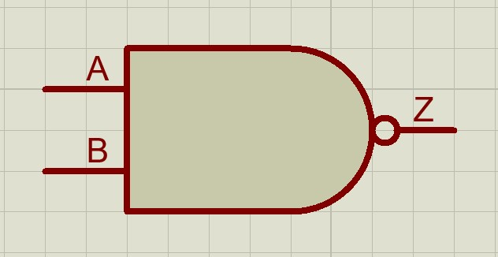
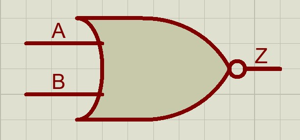

iesirea sa este inversul intrarii, adica este falsa daca intrarea este adevarata si adevarata daca este falsa
simbol:
tabel de adevar
| A | Z |
|---|---|
| 0 | 1 |
| 1 | 0 |
ecuatie:
iesirea sa este adevarata doar daca ambele intrari sunt adevarate
altfel spus, iesirea sa este falsa daca oricare dintre intrari este falsa
simbol:
tabel de adevar:
| A | B | Z |
|---|---|---|
| 0 | 0 | 0 |
| 0 | 1 | 0 |
| 1 | 0 | 0 |
| 1 | 1 | 1 |
ecuatie:
iesirea sa este adevarata daca oricare dintre intrari este adevarata
iesirea sa este falsa doar daca ambele intrari sunt false
simbol:
tabel de adevar:
| A | B | Z |
|---|---|---|
| 0 | 0 | 0 |
| 0 | 1 | 1 |
| 1 | 0 | 1 |
| 1 | 1 | 1 |
ecuatie:
iesirea sa este adevarata daca cele 2 intrari au valori de adevar diferite
altfel spus, este o poarta SAU care este falsa si in cazul in care cele 2 intrari sunt adevarate
simbol:
tabel de adevar:
| A | B | Z |
|---|---|---|
| 0 | 0 | 0 |
| 0 | 1 | 1 |
| 1 | 0 | 1 |
| 1 | 1 | 0 |
ecuatie:
Z = A ^ B
din tabelul de adevar se observa ca:
se comporta ca o poarta SI a carei iesire este negata
simbol: 
tabel de adevar:
| A | B | Z |
|---|---|---|
| 0 | 0 | 1 |
| 0 | 1 | 1 |
| 1 | 0 | 1 |
| 1 | 1 | 0 |
ecuatie:
se comporta ca o poarta SAU a carei iesire este negata
simbol: 
tabel de adevar:
| A | B | Z |
|---|---|---|
| 0 | 0 | 1 |
| 0 | 1 | 0 |
| 1 | 0 | 0 |
| 1 | 1 | 0 |
ecuatie:
module module_name
(input input1, input2,
output output1, output2)
// module code
endmodule
wirewirewire este ca un fir fizic, care nu poate sa memoreze o valoare, spre deosebire de un semnal de tip reg care memoreaza o valoare pana cand aceasta este modificata| a | b | c_in | s | c_out |
|---|---|---|---|---|
| 0 | 0 | 0 | 0 | 0 |
| 0 | 0 | 1 | 1 | 0 |
| 0 | 1 | 0 | 1 | 0 |
| 0 | 1 | 1 | 0 | 1 |
| 1 | 0 | 0 | 1 | 0 |
| 1 | 0 | 1 | 0 | 1 |
| 1 | 1 | 0 | 0 | 1 |
| 1 | 1 | 1 | 1 | 1 |
assign
assign #2 x = a + bx atunci cand se modifica orice semnal din partea dreapta, adica a sau b2 unitati de timpx`timescale 1ns/1ps
module full_adder_cell
(input a, b, c_in,
output s, c_out)
assign #2 c_out = (a & b) | (a & c_in) | (b & c_in);
assign #2 s = a^b^c_in;
endmodule